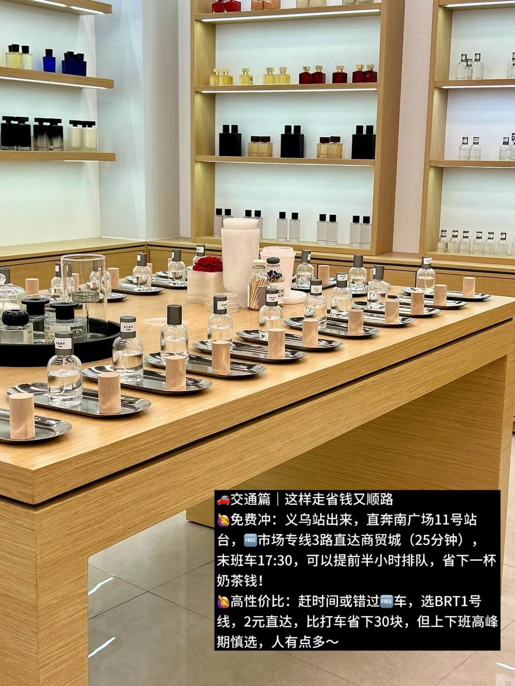
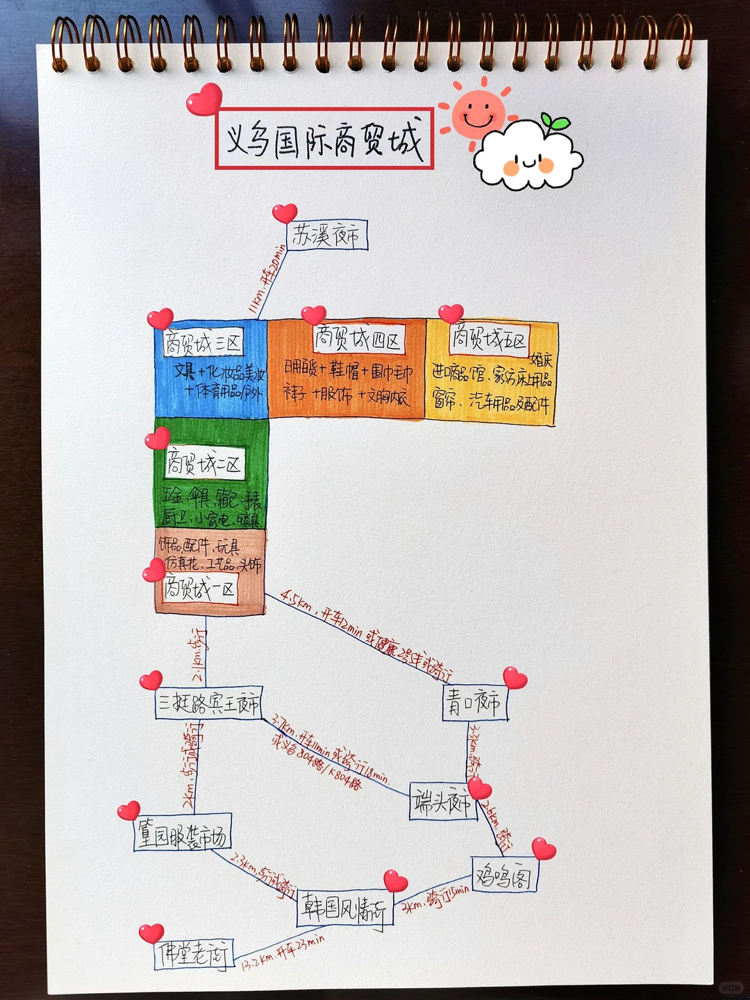
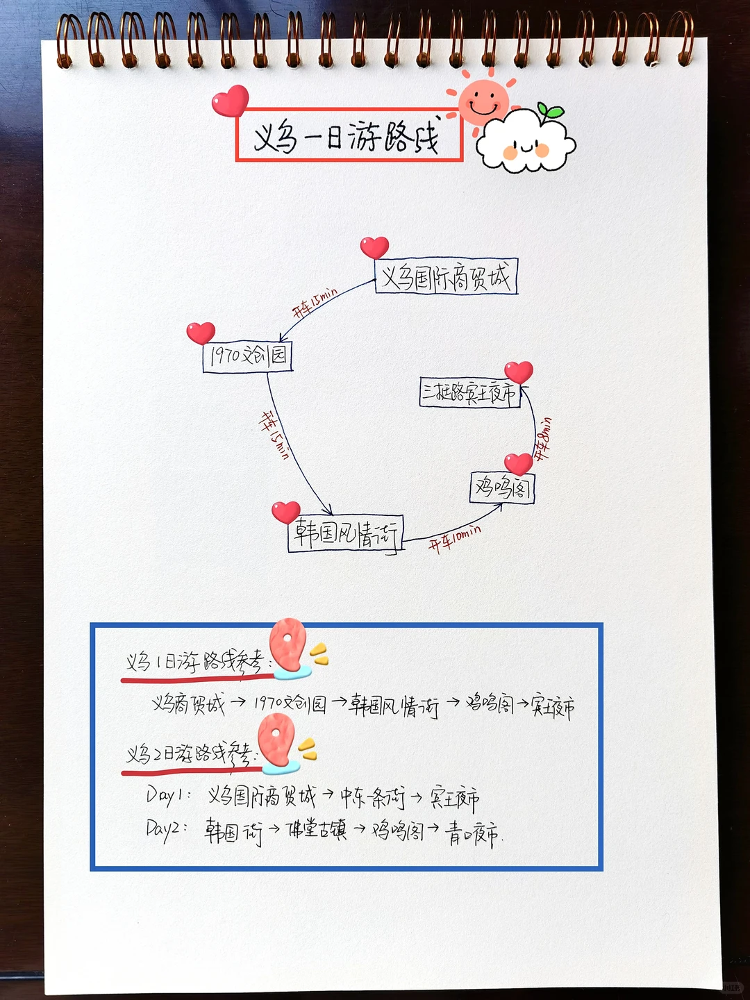

一区
饰品、发饰、玩具、玩偶、仿真花、工艺品、喜庆用品。最适合普通游客和年轻人逛。
- 1F饰品配件、玩具、花类
- 2F头饰、珠宝首饰、饰品配件
- 3F工艺品、装饰、相框、喜庆用品
- 4F包包、玩具、东扩热门店铺
Yiwu Shopping Field Guide
这版更像网页攻略：按“怎么逛”组织，而不是单纯罗列景点。白天锁定国际商贸城核心区，晚上切换到零售市场、夜市和拍照点，两天一夜最舒服。

第一天把最消耗体力的采购放在白天完成；第二天补零售、服装、拍照和异国风味街区。
南广场11号站台坐市场专线3路，攻略提到约25分钟；赶时间或第一次来，直接出租车到第一个目标区更省心。
有明确需求再去。宠物用品区不大，但多数不零售，做工要现场看细节；普通游客可以快速扫过。
可去瑶式醋炒鸡一带，攻略里重点推荐经典醋炒嫩鸡，其他菜不必点太多。
1F小袜岛零售友好，袜子多为5-10元；2F帽子可逛；3-4F时间紧可跳过；5F看睡衣但不一定便宜。
从4F往下逛效率高。4F包包/玩具，3F和2F发饰、娃衣、饰品配件多；好看的韩系发饰很多不零售，记得先问。
想买衣服去篁园；想拍夜景去鸡鸣阁；想小吃和便宜小商品去宾王夜市。不要把商贸城采购压到晚上。
手串、珠子、饰品配件更适合单买，慢慢淘比在批发档口被拒绝舒服很多。
下午买衣服和拍照，晚餐安排韩国风情街或异国餐厅；最后按体力选鸡鸣阁夜景或宾王夜市。
真正省时间的逛法是“目标品类 -> 区 -> 楼层 -> 摊位号”。没有目标就只逛一区和四区。
饰品、发饰、玩具、玩偶、仿真花、工艺品、喜庆用品。最适合普通游客和年轻人逛。
五金、雨具、箱包、锁具、小家电、钟表、电子仪器。更偏采购，不是观光型区域。
文具、美妆、运动户外、眼镜、服装辅料。适合文创、办公、辅料、运动用品选品。
袜子、帽子、睡衣、内衣、日用百货、围巾、鞋类。零售友好度相对高，是游客重点区。
进口商品、床品、宠物用品、发制品、婚庆用品、窗帘、汽车用品。适合有明确需求的人。
如果你不是拿货老板，下面这些点比商贸城更适合买单件、试穿和随便逛。
手串、珠子、饰品配件，可以单买，适合慢慢淘。适合放在第二天上午。
衣服、服装零售，攻略提到可逛到20:30左右。适合晚上补买穿搭类。
18:00以后热闹，衣服、小吃、小商品都有。适合体验，不适合严肃比价采购。
义乌的交通难点不是远，而是市场体量太大、上车点和区间转场容易耗时间。
| 项目 | 建议 | 备注 |
|---|---|---|
| 义乌站 -> 商贸城 | 南广场11号站台坐市场专线3路；也可坐BRT1号线。 | 攻略提到专线约25分钟、末班17:30；BRT约2元。 |
| 赶时间 | 出租车到第一个目标区。 | 第一次来找网约车上车点可能耗时，一日极限逛不建议赌。 |
| 区与区之间 | 四区五区相对近，其余转场可打车。 | 下午五六点回车站要多留30-45分钟。 |
| 住宿 | 稠城街道、商贸城附近、新光汇、义乌之心、吾悦广场一带。 | 下楼吃饭方便，晚上转场省体力。 |
| 预算 | 公交0-2元；区间打车约10-45元；餐饮人均40-100元弹性较大。 | 购物预算单独算，批发/样品价和零售价差异很大。 |
采购日不要为了吃饭绕太远，第一天以商贸城附近为主，第二天再安排异国风味。
醋炒鸡、老鸭煲、东河肉饼、手擀面、酒糟核桃、麦角。第一天午餐可安排醋炒鸡，第二天再补本地小吃。
土耳其苏坦/BEYTI、阿富汗阿里亚娜、印度侯纯里。义乌外贸氛围浓，晚餐很适合安排一顿异国菜。
义乌买东西的关键不是砍价话术，而是问清规则、保护时间和体力。
保留原攻略图中的交通、分区、楼层和路线信息，方便对照。






资料来源：用户提供的3条小红书链接及其图文内容。营业时间、公交末班、票价和店铺零售政策可能随节假日和市场调整变化，出发当天建议用地图 App 和官方/店铺信息再次确认。